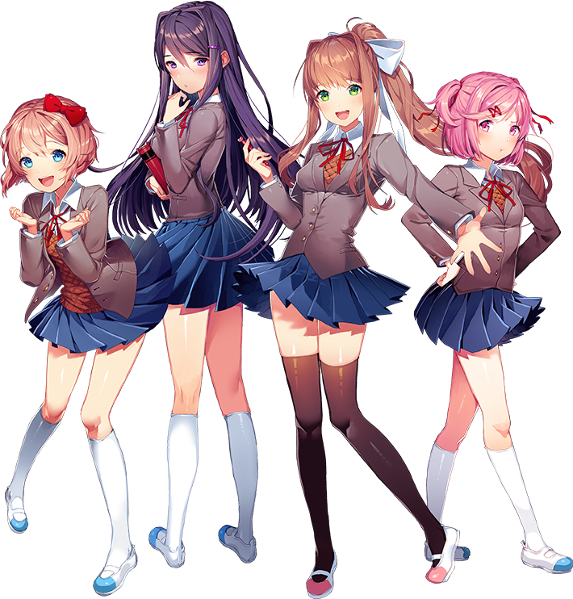
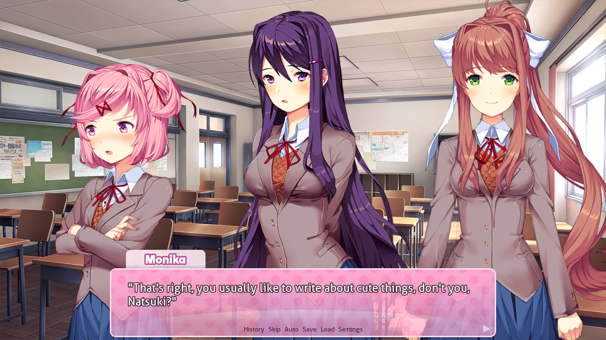

Doki Doki Literature Club!
A experiência original da Team Salvato.
Gratuita para jogar no computador.
Quatro garotas. Um clube de literatura.
E uma história que fica com você.


Uma tarde normal no clube… certo? ♡Você aceita o convite de Sayori e entra para o Clube de Literatura. Entre conversas, livros e poemas, cada encontro é uma chance de se aproximar de alguém.
Criado pela Team Salvato, Doki Doki Literature Club! mistura visual novel e horror psicológico em uma experiência que vai além da primeira impressão. Descubra no seu ritmo — a surpresa faz parte da história.
Conheça o site oficialAntes de abrir o jogo: DDLC contém horror psicológico e temas sensíveis. Segundo o site oficial, não é adequado para crianças ou pessoas facilmente perturbadas.
Saiba mais ↗Cada uma tem seu próprio jeito de ver o mundo.
Clique para conhecer um pouco mais.
Um pouco da arte que dá vida a esse universo.
Imagens dos sites oficiais de DDLC e DDLC Plus! • Clique para ver de pertinho.
Escolha uma palavra para começar, deixe a imaginação correr e preencha esta página do seu jeito.
Seu rascunho fica salvo apenas neste navegador.
Nenhum poema é enviado para nós.
Conheça a história por onde tudo começou
ou descubra mais sobre essas amizades.
A experiência original da Team Salvato.
Gratuita para jogar no computador.
O original, seis histórias paralelas de amizade,
arte em 1080p e músicas adicionais.